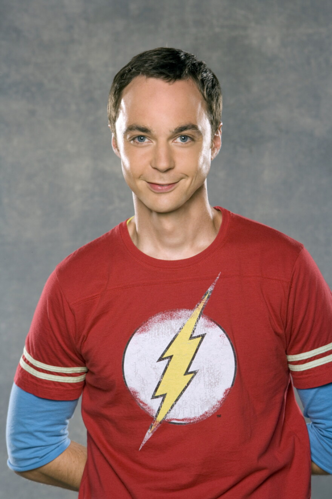

WELCOME TO THE NERD ZONE
Välkommen till världen av vetenskap, vänskap, kärlek och riktigt nördig humor!
Utforska serien ↓
THE STORY
The Big Bang Theory är en amerikansk komediserie som handlar om ett gäng väldigt smarta vänner som försöker navigera genom livet, relationer och sociala situationer. Vi får följa fysikerna Sheldon Cooper och Leonard Hofstadter, deras vänner Howard och Raj samt grannen Penny. Serien blandar vetenskap, vänskap och humor på ett väldigt underhållande sätt!
MEET THE GANG
Ett geni inom fysik som älskar rutiner, regler och att ha rätt. Bazinga!
En snäll och smart fysiker som ofta försöker hålla gruppen tillsammans.
Ingenjör med en stor personlighet och ett stort intresse för rymden.
Astrofysiker som älskar astronomi, filmer och romantik.
Sheldons och Leonards granne som bidrar med en helt annan syn på livet.
Neurobiolog som delar många av Sheldons intressen.
NERD FACTS
🧪 Serien hade premiär år 2007.
📺 Serien består av 12 säsonger.
🏆 Serien blev en av de mest populära sitcomserierna i världen.
🚪 Sheldon har en väldigt speciell knackningsrutin.
🎮 Gänget älskar spel, science fiction och superhjältar.